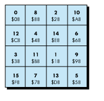

This article shows just how easy it is to include support for scanner hardware in your
application program. With just a little effort, you can add significant functionality to
your program.
In this article, we explore using the Apple Scanner (a flatbed scanner) and the Apple
II High-Speed SCSI Card with either an Enhanced Apple IIe computer or an Apple IIGS
computer running the ProDOS-8 operating system. (A future article will cover
GS/OS.) The concepts presented here can be used for any scanner that can be connected
to an Apple IIe or Apple IIGS via the Apple II SCSI card.
For this article, we limit our discussion to the graphics modes available on the Apple
IIe (HiRes and Double HiRes modes). These modes are more limited in resolution and
color generation than the Super HiRes mode available on the IIGS, but they allow our
sample program to run on most of the current Apple II family of systems in use today.
We focus on 1-bit-per-pixel halftone and line art images. In so doing, we are able to
display the data on the screen easily.
...98, 99, 100. Ready or not, here we come. Under the ProDOS-8 operating system,
we don't have access to the loaded drivers that have been written for the GS/OS
environment. Since the scanner is a character device, data is returned in bytes rather
than in blocks. ProDOS-8 can't help us read from character devices, so we need to
walk the slots looking for the card we want and then talk to the card directly to find the
device we want.
APPLE HIGH-SPEED SCSI CARD, WHERE ARE YOU?
We must first find which slot the high-speed SCSI card is in. We start at slot 7 and
work our way down. In the following code segment, we look for a SmartPort device in
the current slot. If one is found, we must determine if it is a SCSI card that supports
extended SmartPort calls. Finally, we need to make sure that this is the type of card
we want. In other words, "Is this card from a vendor whose command set I
understand?" See Code Sample 1.
;*******************************************************
;
; CODE SAMPLE 1
;
; In this first code segment, we walk the slots starting
; at slot 7, looking first for a card of any kind. Once
; found, we check the ID bytes for a SmartPort card.
; Once found, we check the ID Type byte to see if it is
; a SCSI card. If the card passes all these tests, we
; then issue a Device $00 Status $00 call to further
; ensure that this is the Apple II High-Speed SCSI Card.
;
;*******************************************************
find_card
;
; Save the current Zero
; Page values before
; using them.
;
lda <My_ZPage
pha
lda <My_ZPage+1
pha
;
; Start at slot 7.
;
lda #slot_7
sta <My_ZPage+1 ;Zero Page
sta slot+1 ;For Safe keeping
stz <My_ZPage
stz slot
;
; Is it a SmartPort card?
;
@chk_smart ldy #Blk_sigl
lda (My_ZPage),y ;Block_device Signature Byte
cmp #$20 ;#1 = $20
bne @next_slot
ldy #Blk_sig2
lda (My_ZPage),y ;Block_device Signature Byte
bne @next_slot ;#2 = $00
ldy #Blk_sig3
lda (My_ZPage),y ;Block_device Signature Byte
cmp #$03 ;#3 = $03
bne @next_slot
ldy #SPort_sig
lda (My_ZPage),y ;SmartPort Signature Byte
bne @next_slot ;#1 = $00
;
; We have a SmartPort
; device. Is it SCSI with
; Extended SmartPort?
;
ldy #SPort_ID
lda (My_ZPage),y
and #Ext_SPort+\
SCSI
cmp #Ext_SPort+\
SCSI
bne @next_slot
;
; Is it an Apple II
; High-Speed SCSI Card?
;
jsr is_it_appl
bcc @exit
;
; Check the next slot.
;
@next_slot lda <My_ZPage+1
dec a
sta <My_ZPage+1
sta slot+1
cmp #slot_1
bge @chk_smart
lda #No_dev ;No Device Error
;
; Clean exit
;
@exit tax
pla
sta <My_ZPage+1
pla
sta <My_ZPage
txa
cmp #$01 ;Set Carry if Non-Zero.
rts
;
; This routine determines
; if the card is the new
; high-speed SCSI card.
;
is_it_appl ldy #$ff
lda (My_ZPage),y
clc
adc #$03 ;Set SmartPort Entry Address.
sta card_ntry
lda <My_ZPage+1
sta card_ntry+1
jsr call_card
dc.b $00 ;Status Call Command Number
dc.w stat_list1
;
; Check the results.
;
lda stat_data+2 ;Low Byte of Vendor ID
cmp #$01 ;Must be $01
bne @non_apple
lda stat_data+3 ;High Byte of Vendor ID
bne @non_apple ;Must be $00
lda stat_data+4 ;Low Byte of Version
bne @non_apple ;Should be Null
lda stat_data+5 ;High Byte of Version
bne @non_apple ;Should be Null
clc ;Acc. 0 by previous LDA
bra @done
@non_apple lda #No_dev ;Device not found
sec
;
; Restore ZPage.
;
@done pha
php
lda slot
sta <My_ZPage
lda slot+1
sta <My_ZPage+1
plp
pla
rts
slot dc.w $0000
;*******************************************************
call_card jmp (card_ntry)
card_ntry dc.w $0000
;*******************************************************
stat_list1 dc.b $03 ;PCount = 3
dc.b $00 ;Device = Card
dc.w stat_data ;Data returned here
dc.b $00 ;Get Host Status Call
;*******************************************************
stat_data dcb.b 64,0 ;Our Buffer
;*******************************************************
FINDING THE SCANNER IN A HAYSTACK
Now that we've found the card, or at least a card (there may be more than one), we
need to ask the card, politely of course, if it has seen the scanner and if so, where. See
Code Sample 2.
"Excuse me SCSI card, we're taking a census and would like to ask you a few questions
if you don't mind. How many devices live at this slot? I see, and are any of them by
chance character devices? Hmmm, too bad. I'll try the next slot. Sorry to bother you,
and thank you for your time."
. . . a few slots later . . ."Hi, we're taking a poll and would like your response to a few
short questions. How many devices live at this slot? That many, great. Are any of them
character devices? Getting warmer. May we come in to talk to them? Thank you."
;*******************************************************
;
; CODE SAMPLE 2
;
; In this code segment, we walk the unit numbers from the
; SCSI card starting at unit 2 and going to unit 0 to
; get the actual unit number count. Once this is
; done, we start at unit 1 and walk forward until we
; find the scanner.
;
;*******************************************************
find_scanr
;
; First we issue a
; Status call to device
; number 2. This call
; forces the card to
; build its tables if it
; has not yet done so.
;
lda #$02
sta dev_num2
stz stat_code2
jsr call_card
dc.b $00 ;Status Call Command Number
dc.w stat_list2
bcs @error
;
; Now call unit 0 to
; find out the total
; device count.
;
stz dev_num2
jsr call_card
dc.b $00 ;Status Call Command Number
dc.w stat_list2
bcs @error
lda stat_data2 ;Get the Total Device
sta dev_count ;Count.
lda #$03 ;Set up for DIB Status
sta stat_code2 ;calls.
@loop lda dev_num2 ;First time we increment
cmp dev_count ;a zero giving a device
bge @error ;number of 1.
inc dev_num2
jsr call_card
dc.b $00 ;Status Call Command Number
dc.w stat_list2
bcs @error
lda d_type
cmp #$08 ;Is it Type = Scanner?
bne @loop ;No
lda d_stype
cmp #$A0 ;Subtype = $A0?
bne @loop ;No
;
; Scan string is a Pascal
; string (a length byte
; followed by ASCII). We
; want to make sure that
; both the length and the
; text in 'scan_str' match
; the data returned in
; 'id_str_len' and 'id_str'.
;
ldx id_str_len
@str_loop lda id_str_len,x
cmp scan_str,x
bne @loop
dex
bne @str_loop
lda dev_num2 ;We have our scanner.
sta scan_dnum
lda #No_Err
clc
rts
@error lda #No_dev ;Device not found.
sec
rts
;*******************************************************
scan_str dc.b 'APPLE SCANNER ';4 Spaces between
;1 Space after
dev_count dc.b $00
;*******************************************************
scan_dnum dc.b $00 ;Scanner Device Number
;*******************************************************
stat_list2 dc.b $03 ;PCount = 3
dev_num2 dc.b $00 ;Device number
dc.w stat_data ;Data returned here
stat_code2 dc.b $00 ;Status Code
;*******************************************************
stat_data2 ;Our Buffer. Used over.
d_stat dc.b $00 ;Device Status Byte
blk_low dc.b $00 ;Block Count (Low)
blk_mid dc.b $00 ;Block Count (Mid)
blk_hi dc.b $00 ;Block Count (High)
id_str_len dc.b $00 ;ID String Length
id_str dcb.b 16,$00 ;ID String (16 Bytes)
d_type dc.b $00 ;Device Type
d_stype dc.b $00 ;Device Subtype
d_version dc.w $00 ;Version Word
;*******************************************************
Now that we've found the scanner, we're ready to plant our thoughts in it. We do this
by sending a few commands to the scanner, telling it what type of image we expect and
what the scanner should do with the image before transferring it to us.
WE ARE ONE--OUR THOUGHTS ARE YOUR THOUGHTS
First, we send the scanner the halftone filter we want to use; then we set our scan
window.
Halftone filter. Since we're going to do a halftone scan in our example, we issue a
call to set the halftone filter. Note that we don't need to set this halftone filter if we
choose to use one of the default filters or if we are going to scan in Line Art mode. A
halftone filter is nothing more than a defined threshold for each pixel of a 4 by 4
block. As the image under the mask changes intensity, the filter causes more or fewer
of the dots to be black; the rest of the dots are white. The 4 by 4 block then becomes
darker or lighter depending on the number of dots that are set to white within it,
simulating gray tones even though our graphic mode knows only black and white.
Setting the halftone filter is easy; picking the filter pattern that best suits your needs
is harder. Use one of the built-in patterns unless you have a better one. We use a
simple Bayer type filter for this example. See Figure 1 and Code Sample 3.

Figure 1 Simple Bayer Pattern
;*******************************************************
;
; CODE SAMPLE 3
;
; In this code segment, we issue an Apple Scanner SEND
; command by using the Apple SCSI Card Generic SCSI
; call ($2B). By so doing, we can send our halftone
; filter to the scanner.
;
;*******************************************************
htone_filter
;
; Issue the call.
;
lda scan_dnum
sta dev_num3
jsr call_card
dc.b $04 ;Control Call Command Number
dc.w cmd_list3
rts
;*******************************************************
cmd_list3 dc.b $03 ;PCount = 3
dev_num3 dc.b $04 ;Device number
dc.w filter_data ;Pointer to data
dc.b $2B ;Control Code
;*******************************************************
filter_data ;Our Data
dc.w 24 ;Total Length of Parms
dc.l send_fltr ;CDB Pointer (Long)
dc.l DCData3 ;DCMove Ptr (Long)
dc.l $00000000 ;Rqst Sense Ptr (Long)
dc.b $00 ;Reserved
dc.b $00 ;SCSI Status
dc.b $00 ;Command Count
dc.l $00000011 ;Trans Count (Long)
dc.b $00 ;DMA Mode
dc.l $00000000 ;Reserved (Long)
;*******************************************************
send_fltr dc.b $2A ;Scanner SEND Command
dc.b $00 ;Reserved
dc.b $02 ;Transfer Type
dc.b $00 ;Reserved
dc.b $00 ;Reserved
dc.b $02 ;Transfer ID Byte
dc.b $00 ;Reserved
dc.b $00 ;Transfer Length (High)
dc.b $11 ;Transfer Length (Low)
dc.b $00 ;Reserved
;*******************************************************
DCData3 dc.l send_data ;Scanner SEND Data Ptr
dc.l $00000011 ;Transfer Count
dc.l $00000000 ;Offset
dc.l $00000000 ;Reserved
dc.l $00000000 ;DCStop
dc.l $00000000 ;Reserved
dc.l $00000000 ;Reserved
dc.l $00000000 ;Reserved
;*******************************************************
send_data dc.b $44 ;4 X 4 Matrix Size
dc.b $08 ;Pel 0
dc.b $88 ;Pel 1
dc.b $28 ;Pel 2
dc.b $A8 ;Pel 3
dc.b $C8 ;Pel 4
dc.b $48 ;Pel 5
dc.b $E8 ;Pel 6
dc.b $68 ;Pel 7
dc.b $38 ;Pel 8
dc.b $B8 ;Pel 9
dc.b $18 ;Pel 10
dc.b $98 ;Pel 11
dc.b $F8 ;Pel 12
dc.b $78 ;Pel 13
dc.b $D8 ;Pel 14
dc.b $58 ;Pel 15
;*******************************************************
Our scan window. Now that the scanner knows what halftone filter to use, we need
to describe the scan window through which we'll view the document. Because we're
using one of the Apple IIe graphics modes, our window will be fairly small. At 75 dpi
in HiRes mode, or 150 dpi in Double HiRes mode, our window is about 3.75 inches
across.
For the vertical screen, we have 192 pixels. At 75 dpi, our window is about 2.5
inches tall.
By using 75 dpi for HiRes and 150 dpi for Double HiRes, we can maintain a good aspect
ratio. This allows us to display an image with minimum distortion.
In our example we use Double HiRes, so we first set the resolution for the X axis to
150 dpi and for the Y axis to 75 dpi. Then, we set our scan window's upper-left corner
to absolute zero. See Code Sample 4.
;*******************************************************
;
; CODE SAMPLE 4
;
; In this code segment, we issue an Apple Scanner
; DEFINE WINDOW PARAMETERS command by using the Apple
; SCSI Card Generic SCSI call ($2B). This command
; defines the area of the scanner glass we want to scan.
;
;*******************************************************
def_window
;
; Issue the call.
;
lda scan_dnum
sta dev_num4
jsr call_card
dc.b $04 ;Control Call Command Number
dc.w cmd_list4
rts
;*******************************************************
cmd_list4 dc.b $03 ;PCount = 3
dev_num4 dc.b $00 ;Device number
dc.w def_wndo ;Pointer to data
dc.b $2B ;Control Code
;*******************************************************
def_wndo ;Our Data
dc.w 24 ;Total Length of Parms
dc.l def_wnd_cmd ;CDB Pointer (Long)
dc.l DCData4 ;DCMove Ptr (Long)
dc.l $00000000 ;Rqst Sense Ptr (Long)
dc.b $00 ;Reserved
dc.b $00 ;SCSI Status
dc.b $00 ;Command Count
dc.l 8+40 ;Trans Count (Long)
dc.b $00 ;DMA Mode
dc.l $00000000 ;Reserved (Long)
;*******************************************************
def_wnd_cmd dc.b $24 ;Scanner Define Window
;Parameters Command
dc.b $00 ;Reserved
dc.b $00 ;Reserved
dc.b $00 ;Reserved
dc.b $00 ;Reserved
dc.b $00 ;Reserved
dc.b $00 ;Transfer Length (High)
dc.b $00 ;Transfer Length (Mid)
dc.b 8+40 ;Transfer Length (Low)
dc.b $80 ;Apple Bit
;*******************************************************
DCData4 dc.l wndo_data ;Scan Window Data Ptr
dc.l 8+40 ;Transfer Count
dc.l $00000000 ;Offset
dc.l $00000000 ;Reserved
dc.l $00000000 ;DCStop
dc.l $00000000 ;Reserved
dc.l $00000000 ;Reserved
dc.l $00000000 ;Reserved
;*******************************************************
; NOTE: Remember that all values longer than 1 byte
; are in reverse order from native 65xxx code.
;*******************************************************
wndo_data dcb.b 6,$00 ;Reserved
dc.b $00 ;Transfer Length (High)
dc.b 40 ;Transfer Length (Low)
dc.b $01 ;Window Identifier
dc.b $00 ;Reserved
dc.b $00 ;X Resolution (High)
dc.b 150 ;X Resolution (Low)
dc.b $00 ;Y Resolution (High)
dc.b 75 ;Y Resolution (Low)
;
; We will use the corner as
; our upper-left position.
; This is at coordinate 0,0.
;
dc.b $00 ;Upper Left X (High)
dc.b $00 ;Upper Left X (Mid High)
dc.b $00 ;Upper Left X (Mid Low)
dc.b $00 ;Upper Left X (Low)
dc.b $00 ;Upper Left Y (High)
dc.b $00 ;Upper Left Y (Mid High)
dc.b $00 ;Upper Left Y (Mid Low)
dc.b $00 ;Upper Left Y (Low)
;
; Width is defined as the number
; of 1/1200-inch increments on
; the horizontal axis; must be on
; a byte boundary for both the
; start and end points. We will
; set for 4 inches and drop the
; extra.
;
dc.b $00 ;Width (High)
dc.b $00 ;Width (Mid High)
dc.b 4*1200/256 ;Width (Mid Low)
dc.b 4*1200 ;Width (Low)
;
; Length is defined as the number.
; of 1/1200-inch increments on the
; vertical axis. We want ≈ 2-1/2
; inches (or 3072 increments).
;
dc.b $00 ;Length (High)
dc.b $00 ;Length (Mid High)
dc.b 3072/256 ;Length 2.56*1200 (Mid Low)
dc.b 3072 ;Length 2.56*1200 (Low)
dc.b $80 ;Median Brightness
dc.b $80 ;Median Threshold
dc.b $80 ;Median Contrast
dc.b $01 ;Image Composition (Halftone)
dc.b $01 ;Bits per Pixel
dc.b $00 ;Halftone Mask Always $00 (High)
dc.b $02 ;Downloaded Mask Pattern (Low)
dc.b $03 ;Padding Type
dcb.b 2,$00 ;Reserved
dc.b $00 ;Compression Type (None)
dcb.b 7,$00 ;Scanner Ref. is wrong
; should be 7,
; not 5.
;*******************************************************
ENGAGE SCANNER
After telling the scanner how to scan, we need to tell it to start scanning. See Code
Sample 5.
;*******************************************************
;
; CODE SAMPLE 5
;
; This code segment issues an Apple Scanner SCAN
; command by using the Apple SCSI Card Generic SCSI
; call ($2B). This starts the actual scanning.
;
;*******************************************************
start_scan
;
; Issue the call.
;
lda scan_dnum
sta dev_num5
jsr call_card
dc.b $04 ;Control Call Command Number
dc.w cmd_list5
rts
;*******************************************************
cmd_list5 dc.b $03 ;PCount = 3
dev_num5 dc.b $00 ;Device number
dc.w scan_cmd ;Pointer to data
dc.b $2B ;Control Code
;*******************************************************
scan_cm ;Our Data
dc.w 24 ;Total Length of Parms
dc.l do_scan ;CDB Pointer (Long)
dc.l DCData ;DCMove Ptr (Long)
dc.l $00000000 ;Rqst Sense Ptr (Long)
dc.b $00 ;Reserved
dc.b $00 ;SCSI Status
dc.b $00 ;Command Count
dc.l $00000001 ;Trans Count (Long)
dc.b $00 ;DMA Mode
dc.l $00000000 ;Reserved (Long)
;*******************************************************
do_scan dc.b $1B ;SCAN
;Parameters Command
dcb.b 3,$00 ;Reserved
dc.b 1 ;Transfer Length (Low)
dc.b $00 ;Wait and Home Bits = 0
;*******************************************************
DCData5 dc.l window_ID ;Scan Window ID Ptr
dc.l 1 ;Transfer Count
dc.l $00000000 ;Offset
dc.l $00000000 ;Reserved
dc.l $00000000 ;DCStop
dc.l $00000000 ;Reserved
dc.l $00000000 ;Reserved
dc.l $00000000 ;Reserved
;*******************************************************
window_ID dc.b $01 ;Window Identifier
;*******************************************************
ENERGIZING!
We can get data from the scanner in two ways. We could get it all at once and then
manipulate it to go on the screen. In our example, we would need a buffer with
115,200 pixels or 14,400 bytes for the data: (4.0 inches * 150 dpi horizontally) *
(2.56 inches * 75 dpi vertically).
To save the amount of RAM our program uses, however, we set up a buffer large
enough for only one line; then we read each line from the scanner and display it until
the entire image is on the screen. See Code Sample 6.
The data returned by the scanner is 8 pixels per byte. Bit 7 is the left- most pixel and
bit 0 is the right-most pixel; a value of 1 means a black dot in the image. In the Apple
II HiRes mode, we have 7 pixels per byte. Bit 0 is the left-most pixel and bit 6 is the
right-most pixel; a value of 1 means a white dot. Because the formats are different,
the program must convert the returned data, which it does as it goes, using code shown
in Code Sample 6.
*******************************************************
;
; CODE SAMPLE 6
;
; In this code segment, we issue a series of calls to
; the Apple Scanner by using the Apple SCSI Card Generic
; SCSI call ($2B). We first issue a GET DATA STATUS
; call to see if there is enough data. Then we read
; in a single scan line with a READ call. The data is
; then converted and placed in a video buffer.
;
;*******************************************************
get_data
stz scan_line ;Init the scan line to 0.
;
; Issue the call.
;
lda scan_dnum
sta dev_num6
sta dev_num65
@get_data2 jsr call_card
dc.b $04 ;Control Call Command Number
dc.w cmd_list6
bcs @out
;
; Is there enough data?
; Enough data = 1 scan
; line of 4 inches at 150
; dpi (or 600 pixels). At
; 8 pixels per byte, the
; data will be padded to
; 75 bytes.
;
lda scan_data
bne @have_line
lda scan_data+1
bne @have_line
lda scan_data+2
cmp #rqst_cnt ;Decimal 75
blt get_data
;
; We have the data. Read
; it.
;
@have_line jsr call_card
dc.b $04 ;Control Call Command Number
dc.w cmd_list65
bcs @out
;
; Now we need to invert
; the data.
;
lda #80 ;80 bytes/line for Double HiRes
sta byte_count
stz byte_index
@loop_1 lda #$07
sta seven ;Pixels/byte
@loop_2 ldx #rqst_cnt-2
asl raw_image+\
rqst_cnt-1 ;Shift bits out the top to
@loop_3 rol raw_image,x :the next byte 1 at a time
dex
bpl @loop_3
ldx byte_index ;Shift the last bit into
ror screen,x ;this byte. This reverses the
dec seven ;bit ordering and takes 8 bits
bne @loop_2 ;per byte down to 7.
lsr screen,x
inc byte_index
dec byte_count
bne @loop_1
;
; Move data to scan line.
;
ldx scan_line
jsr on_screen
inc scan_line
bra @get_data2
@out lda #$00
clc
rts
;*******************************************************
scan_line dc.b $00 ;Scan Line Index
byte_count dc.b $00 ;Number of bytes left
byte_index dc.b $00 ;Current Byte in use
seven dc.b $00 ;Count off 7 pixels
screen dcb.b 80,0 ;Place to do the screen
;*******************************************************
cmd_list6 dc.b $03 ;PCount = 3
dev_num6 dc.b $00 ;Device number
dc.w gd_status ;Pointer to data
dc.b $2B ;Control Code
cmd_list65 dc.b $03 ;PCount = 3
dev_num65 dc.b $00 ;Device number
dc.w read ;Pointer to data
dc.b $2B ;Control Code
;*******************************************************
gd_status ;Our Data
dc.w 24 ;Total Length of Parms
dc.l get_stat ;CDB Pointer (Long)
dc.l DCData6 ;DCMove Ptr (Long)
dc.l $00000000 ;Rqst Sense Ptr (Long)
dc.b $00 ;Reserved
dc.b $00 ;SCSI Status
dc.b $00 ;Command Count
dc.l $0000000C ;Trans Count (Long)
dc.b $00 ;DMA Mode
dc.l $00000000 ;Reserved (Long)
read ;Our Data
dc.w 24 ;Total Length of Parms
dc.l get_data2 ;CDB Pointer (Long)
dc.l DCData65 ;DCMove Ptr (Long)
dc.l $00000000 ;Rqst Sense Ptr (Long)
dc.b $00 ;Reserved
dc.b $00 ;SCSI Status
dc.b $00 ;Command Count
dc.l rqst_cnt ;Trans Count (Long)
dc.b $00 ;DMA Mode
dc.l $00000000 ;Reserved (Long)
;*******************************************************
get_stat dc.b $34 ;GET DATA STATUS
;Parameters Command
dcb.b 7,$00 ;Reserved
dc.b 12 ;Transfer Length (Low)
dc.b $00 ;Wait and Home Bits = 0
get_data2 dc.b $28 ;READ
;Parameters Command
dcb.b 4,$00 ;Reserved
dc.b $01 ;Window ID
dc.b $00 ;Transfer Length (High)
dc.b $00 ;Transfer Length (Mid)
dc.b rqst_cnt ;Transfer Length (Low)
dc.b $00 ;Wait and Home Bits = 0
;*******************************************************
DCData6 dc.l data_cnt ;Data Pointer
dc.l 12 ;Transfer Count
dc.l $00000000 ;Offset
dc.l $00000000 ;Reserved
dc.l $00000000 ;DCStop
dc.l $00000000 ;Reserved
dc.l $00000000 ;Reserved
dc.l $00000000 ;Reserved
DCData65 dc.l raw_image ;Data Pointer
dc.l rqst_cnt ;Transfer Count
dc.l $00000000 ;Offset
dc.l $00000000 ;Reserved
dc.l $00000000 ;DCStop
dc.l $00000000 ;Reserved
dc.l $00000000 ;Reserved
dc.l $00000000 ;Reserved
;*******************************************************
data_cnt ;Data Space
dcb.b 2,$00 ;Reserved
dc.b $00 ;Data Length
dc.b $00 ;Block
dc.b $00 ;Window Identifier
dcb.b 4,$00 ;Reserved
scan_data dc.b $00 ;Scan Data (High)
dc.b $00 ;Scan Data (Mid)
dc.b $00 ;Scan Data (Low)
raw_image dcb.b 100,$00 ;Scanned Data Image
;*******************************************************
PUT IT ON THE SCREEN, ENSIGN
Because we display the image in black and white, we need to set up the graphic soft
switches accordingly. In our example, we display our image in HiRes Page 1, and we
assume black and white display. On a color video monitor, the image would appear in
black and white. See Code Sample 7.
;*******************************************************
;
; CODE SAMPLE 7
;
; In this code segment, we toggle the HiRes soft
; switches so that we can see what was just scanned.
;
;*******************************************************
display
;
; Save the current state.
;
lda RDTEXT
sta @text ;Text/Graphics
lda RDMIX
sta @mixed ;Mixed?
lda RDPAGE2
sta @page ;Page 1 or 2
lda RDHIRES
sta @hires ;HiRes Mode?
lda RD80VID
sta @80col ;80-Column Mode?
sta SET80VID ;Set 80-Column Mode
sta TXTCLR ;Standard Apple II Graphics
sta MIXCLR ;Clear Mixed Mode
sta TXTPAGE1 ;Page 1
sta HIRES ;HiRes Mode
sta CLRAN3 ;Clear annunciator 3
sta KBD_STRB ;Clear Key Strobe
@key_loop lda KBD ;Get key
bpl @key_loop ;Wait for Key Press
sta KBD_STRB ;Clear Key Strobe
cmp #ESC ;ESC Key
clc
bne @chk_txt
sec ;Exit on ESC
lda SETAN3 ;Set annunciator 3.
@chk_txt lda @text
bpl @chk_mix
sta TXTSET ;Text on
@chk_mix lda @mixed
bpl @chk_page
sta MIXSET ;Mixed on
@chk_page lda @page
bpl @chk_hires
sta TXTPAGE2 ;Page 2
@chk_hires lda @hires
bmi @chk_40col
sta LORES ;HiRes Off
@chk_40col lda @80col
bmi @rts
sta CLR80VID ;80-Column on
@rts rts
@text dc.b $00
@mixed dc.b $00
@page dc.b $00
@hires dc.b $00
@80col dc.b $00
;*******************************************************
FILE THE REPORT AND HEAD FOR HOME
Now, save the image in its displayable format. Save it as you would any file, using
standard ProDOS MLI calls.
FINAL LOG ENTRY
The ability to bring printed images into the computer opens up many possibilities for
you and for your customers. Programs that use graphics can import and add color to
printed images. For example, users can put together files that include family photos.
These files can then be transmitted electronically to others for viewing.
You can also give users control over a number of scan parameters. For example, you
could allow them to position the scan window on a graphic representation of the
scanner glass; users could then position the scan without adjusting the printed page on
the scanner glass. Or you could allow users to specify the resolution of the scan,
showing them how the scan window size changes.
Although not demonstrated here, Line Art mode provides very clean images of scanned
text. If you use Line Art mode to support optical character recognition (OCR), users
can import text and avoid retyping entire manuscripts.
The possibilities are endless. Have fun exploring them. That is, after all, what it is all
about--doing more with your Apple II and having fun doing it.
The scanning process involves five steps for your application, described briefly below.
For general information about scanner technology and terminology, see the Apple
Scanner Reference.
1. Initialize the scanner parameters
You must set the scanner parameters before you start a scan. These parameters
determine how much space the image needs.
Use these commands:
MODE SENSE ($1A)
MODE SELECT ($15)
SEND ($2A)
DEFINE WINDOW PARAMETERS ($24)
2. Define an image buffer
The image buffer is free memory within the computer system that holds the bitmap
image returned by the scanner. The size of the buffer dictates the amount of data you
can retrieve from the scanner and thus the size of the image. If an image is larger
than the available free memory, you can spool it to disk for later retrieval.
3. Start the scan
After you set the parameters, you can issue a scanner command to start scanning.
When the scanner receives this command, it scans the image and places it in its
internal memory.
Use this command: SCAN ($1B)
4. Request the scanned data
You must read the image from the scanner as it is placed in the scanner's internal
memory. Because the scanner's memory can hold only a small portion of the image
being scanned, and because you must read the data to allow the scan to continue, you
should poll the scanner promptly.
Use these commands:
GET DATA STATUS ($34)
READ ($28)
5. Save the image to a file
You can save the data in a number of formats: HiRes and Double HiRes for the Apple II
family, Super HiRes for the Apple IIGS, and PICT or any other Macintosh image
format. You can also store the data in other formats, such as GIF. The choice is
yours.
MATTHEW GULICK According to his business cards, Matt Gulick is an all-around
SCSI (say it out loud) guy--who hates to shave and refuses to wear shoes except when
meeting with someone with a title of VP or higher. He dearly loves the strict dress
code, highly regimented working hours, and totally controlled environment at Apple.
His career here was preordained by his being "genetically defective at birth." This
condition first visibly manifested itself at age 12 when he began reading computer
punch cards for fun. He did temporarily buck his computer industry destiny by
studying pre-vet medicine at Brigham Young University. However, after college he got
back on track by working as an "electronic stuff" sales rep, and then he programmed
for ParaMIS. Now he feels he's running the perfect scam: getting paid to play with
computers. A member of the Dr. Demento Fan Club (DDFC), he fears his wife will sue
him for dementing his four children, who only know the Weird Al versions of song
lyrics. *
You should let users adjust the settings for Brightness, Threshold, and Contrast so
they can customize the scan to the type of image being scanned (black and white or
color; printed page or photo). If you let users choose Line Art or Grayscale, they can
also optimize the scan for text or for an image. *